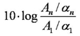

Experimentally measured coverage of frequency range and
normalized power of the radiation source with frequency multiplier.
(For the source based on the 260-380 GHz BWO having output power
30-70 mW.)
The frequency conversion losses (FCL) of the multiplier were determined
using observed amplitude of CO lines and known line absorption coefficients
(see FCL measurement method) as:

List of spectral lines of CO molecule observed at harmonics of 180-260
GHz BWO with the use of the multiplier:
Spectral line of CO molecule at 1490 GHz recorded at the 6-th harmonic
of BWO radiation with the multiplier: